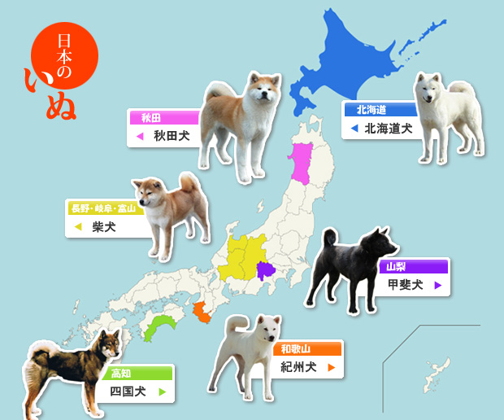
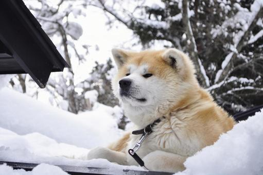
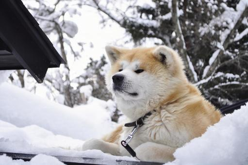
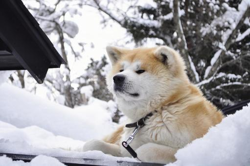

日本犬について
-

 

日本犬とは古くから日本に住んでいる犬の犬種をまとめた名称のことです。
日本犬は主に柴犬・秋田犬・北海道犬・甲斐犬・紀州犬・四国犬の６種類です。

日本犬とは古くから日本に住んでいる犬の犬種をまとめた名称のことです。
日本犬は主に柴犬・秋田犬・北海道犬・甲斐犬・紀州犬・四国犬の６種類です。
ここでは代表的な日本犬の３種を説明していきます。
日本原産の犬種である柴犬は、くるっと巻いた尻尾と三角にピンと立った耳が特徴的で、顔つきはキツネ顔とタヌキ顔の2種類にわかれます。
日本犬のなかでも唯一の小型犬で成犬の体高は約35～40cm、体重は約7～10kgです。柴犬は元々猟犬や番犬として活躍してきた犬種なので、勇敢で警戒心が強く、我慢強い性格をしていますが、自立心が強くベタベタされるのを嫌うため、時には頑固に感じられる場合もあります。
体つきは頑丈でしっかりとしていて、体高と体長がほぼ同じのスクエア型をしています。
つぶらな瞳にピンと立った丸みのある耳、そして背中に背負った巻き尾が特徴です。秋田犬は非常に賢く、我慢強い性格です。
冷静沈着で忠実、飼い主や家族に対してはとても従順ですが、自立心が強い一面もあります。
四国地方に古くからいるのが四国犬で、日本犬のなかで最も狼に似ていると言われています。
ワイルドな風貌が圧倒的な存在感を放つ、中型の土着犬です。飼い主に忠実で、勇敢な性質です。
忠誠心が強く、群れ（飼主）やテリトリーを守る傾向が強いです。
平地を速く走るというよりも、足場の悪い急斜面などでもバランスを保ちながら力強く、軽やかに移動する骨格形成をしています。
四国犬は生物としての「犬」の優れた機能性を純血種ながら保持している中型日本犬です。
日本犬の特徴は...
1.勇敢で身体能力が高い 2.素朴で飼い主には忠実 3.がっしりとした体躯 4.警戒心が強く、番犬気質
の4つが挙げられます。
これらの特徴は海外から見ると日本の「サムライ」とイメージがかぶるようで、日本犬の外見の素朴さが古き良き時代を思い浮かばせるなどと人気が出ています。
日本犬の魅力を理解いただけましたでしょうか？自立心の強い日本犬ですが、人懐っこい一面もあるので皆さんが興味を持っていただければうれしく思います。